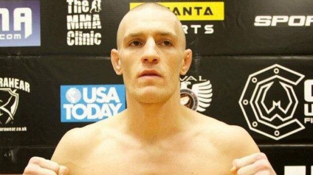
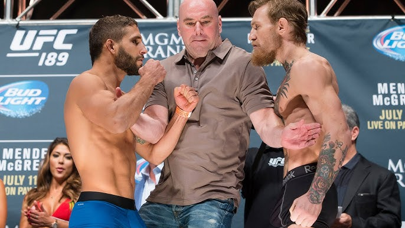
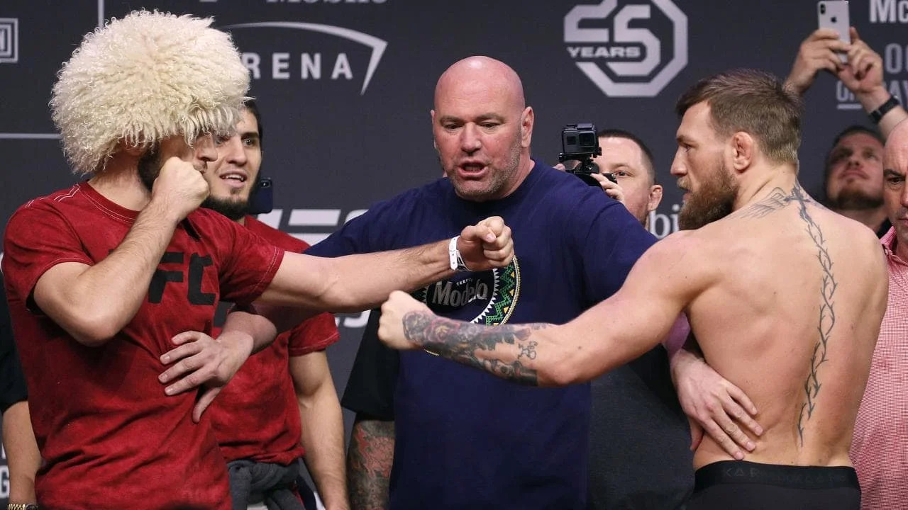
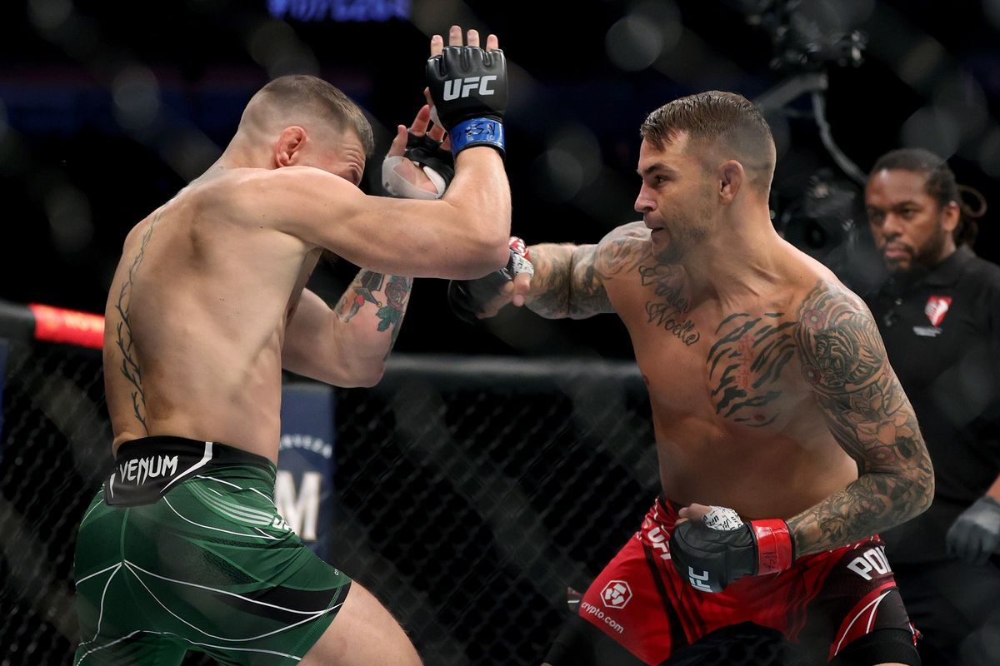
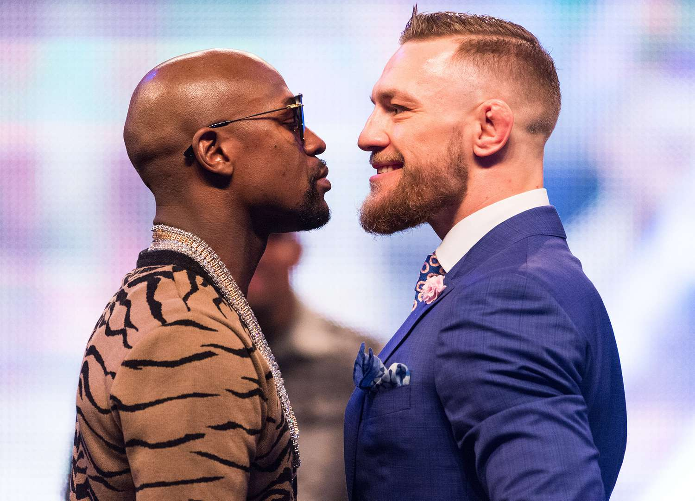

ДЕТСТВО И ЮНОСТЬ
Конор Макгрегор родился в городе Дублин, столице Ирландии. Мальчик вырос в районе Крамлин, где учился в начальной и средней школах. В юности ребенок обожал футбол. Конор играл за команду «Лудерс Селтик». С 12 лет совмещал тренировки с занятиями боксом. Макгрегор начал изучать единоборства, чтобы повысить уверенность в себе и уметь защититься от хулиганов.
В 18-летнем возрасте Макгрегор вместе с семьей переехал в Лукан, пригород Дублина, где Конор выучился на сантехника. Здесь ирландец познакомился с бойцом UFC Томом Иганом, он привел молодого спортсмена в смешанные единоборства.
СПОРТИВНАЯ КАРЬЕРА
Любительская карьера и переход в профессионалы
В феврале 2007 года Макгрегор дебютировал в любительских ММА. На турнире Irish Ring of Truth в Дублине он победил техническим нокаутом Кирана Кэмпбелла в первом раунде. После поединка Конор заключил контракт с промоушеном Irish Cage of Truth. Год спустя боец стал тренироваться в зале Straight Blast Gym (SBG) под руководством известного специалиста Джона Каваны.
В марте 2008 года Макгрегор впервые провел бой среди профессионалов из смешанных единоборств. До перехода в UFC Конор заработал себе статистику 12-2, завоевал два титула в легком и полулегком весе ирландского промоушена Cage Warriors (CWFC).
Известно, что до выступлений в UFC Макгрегор жил в бедности. Ремесло сантехника и водопроводчика изматывало его, молодой человек бросил эту работу. Основные денежные средства поступали ему благодаря пособию по безработице, оно составляло около 200 долларов.
UFC
В 2013 году UFC подписал контракт с Конором Макгрегором на несколько поединков. Печально Известный дебютировал в организации победами над Маркусом Бримаджем (нокаутом в первом раунде) и Максом Холлоуэем (единогласным решением судей).
Следом Макгрегор победил бразильца Диегу Брандана, американца Дастина Порье и немца Денниса Зифера. Во всех трех случаях Конор получил бонус от UFC за лучшее выступление вечера на турнирах.
В июле 2015 года Макгрегор техническим нокаутом одержал победу над американцем Чедом Мендесом на турнире UFC 189. Благодаря этому ирландец стал временным чемпионом UFC в полулегкой весовой категории. В декабре того же года на турнире UFC 194 в Лас-Вегасе Конор на 13-й секунде боя нокаутировал бразильца Жозе Альдо и объединил титул чемпиона UFC в полулегком весе.
В марте 2016 года ирландец впервые потерпел поражение в UFC. Макгрегор проиграл американцу Нейту Диасу удушающим приемом на UFC 196. В августе того года на UFC 202 Конор провел бой-реванш с Диасом, в котором решением большинства судей одолел соперника.
В ноябре 2016 года Макгрегор стал обладателем чемпионского пояса UFC в легком весе после победы над американцем Эдди Альваресом на турнире UFC 205.
Конор стал одной из главных, если не первой звездой UFC. Американская лига за время выступления ирландца заметно выросла в популярности и повысила уровень доходов. Ирландец на пике славы прервал выступления в промоушене и в августе 2017 года провел бой по правилам бокса с Флойдом Мейвезером.
Бой Конор Макгрегор — Хабиб Нурмагомедов
Поединку между Хабибом и Макгрегором предшествовал конфликт бойцов, которые ранее относились друг к другу с уважением. Впервые у них случилась стычка на взвешивании перед турниром UFC 205 в 2016 году. Подраться им не дали охранники. В дальнейшем ситуация становилась только хуже.
Перед поединком с Хабибом Макгрегор оскорблял соперника во время скандальной пресс-конференции перед UFC 229. Ирландец провоцировал Нурмагомедова, предлагал выпить виски и в итоге сделал это с главой UFC Даной Уайтом. Видеозапись пресс-конференции собрала миллионы просмотров.
Главный бой UFC 229 начался с того, что Хабиб не пожал руку Конора до поединка. Во втором раунде началась рубка ударами друг по другу, которая плавно перешла в партер.
В третьем раунде бойцы рубились в стойке: преимущество было на стороне Хабиба, а Конор был измотан. Уроженец Дагестана победил ирландца болевым приемом на челюсть в четвертом раунде, когда его соперник сдался.
После победы Хабиб перепрыгнул через клетку, атаковал команду Макгрегора и начал драться с тренером по БЖЖ Диллоном Дэнисом, что привело к массовым беспорядкам. Уайт не стал вручать Нурмагомедову пояс в октагоне, чемпион покинул зал под свист ирландских болельщиков. Позже российский боец получил дисквалификацию на полгода от атлетической комиссии штата Невада (NSAC) и был оштрафован на 500 тысяч долларов.
По данным СМИ, Хабиб и Конор заработали за бой больше 80 миллионов долларов каждый. В марте 2019 года Макгрегор объявил о завершении карьеры.
Возвращение в UFC
В декабре 2019 года UFC анонсировал поединок Конор Макгрегор — Дональд Серроне. Бой прошел в январе 2020 года и завершился победой ирландца нокаутом в первом раунде.
После первой победы за три года Макгрегор провел два поединка с Порье, в которых потерпел поражения. В последнем бою в июле 2021 года Конор сломал левую ногу. Из-за травмы ирландец не выступал в UFC в 2022 году.
СТИЛЬ БОЯ В MMA
Конор Макгрегор — отличный ударник с богатым арсеналом различных приемов. Специалисты отмечают его хорошую боксерскую школу и неплохие навыки в тхэквондо. Ирландец с легкостью наносит удары ногами по туловищам и головам соперников. Конор обладает мощным нокаутирующим ударом с левой и правой рук. Кроме того, Макгрегор чрезвычайно жестко высказывается об оппонентах перед поединками. Боец UFC прибегает к треш-току, оскорбляя и унижая соперников.
КОНОР МАКГРЕГОР В БОКСЕ
В августе 2017 года в пригороде Лас-Вегаса (США) Конор Макгрегор провел поединок по правилам бокса с непобежденным боксером Флойдом Мейвезером-младшим. Спортсмены сразились за специальный пояс WBC Money Belt. Американец победил ирландца техническим нокаутом в 10-м раунде. Для Конора этот бой стал дебютным в профессиональном боксе. Считается, что Макгрегор получил гонорар в размере 30 миллионов долларов за поединок. С учетом системы PPV (Pay-per-view) боец заработал в сумме около 99 миллионов.
ДОСТИЖЕНИЯ
UFC
- Временный чемпион UFC в полулегком весе
- Чемпион UFC в полулегком весе
- Чемпион UFC в легком весе
- Двукратный обладатель бонуса UFC за лучший бой вечера
- Обладатель бонуса UFC за лучший нокаут вечера
- Семикратный обладатель бонуса UFC за выступление вечера
CWFC
- Чемпион CWFC в полулегком весе
- Чемпион CWFC в легком весе
ВНЕ ОКТАГОНА
Несмотря на бурную карьеру и скандальный образ, личная жизнь Конора Макгрегора достаточно стабильна. С 2008 года он состоит в отношениях с Ди Девлин.
Что касается доходов, то по данным Forbes, в 2021 году Конор Макгрегор стал самым высокооплачиваемым спортсменом в мире. Боец UFC получил 180 миллионов долларов, из них 150 — за продажу прав основного пакета акций своей фирмы виски Proper Twelve. Аналитики онлайн-платформы OLBG посчитали, что ирландец зарабатывал по 8,6 миллиона долларов в минуту, когда находился в октагоне UFC. По данным СМИ, Макгрегор заработал около 18 миллионов долларов с учетом PPV и гонорара от UFC после поражения от американца Дастина Порье на турнире UFC 264.